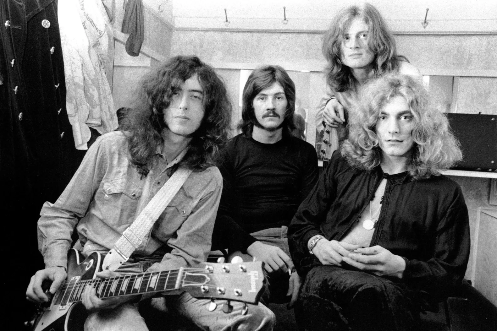
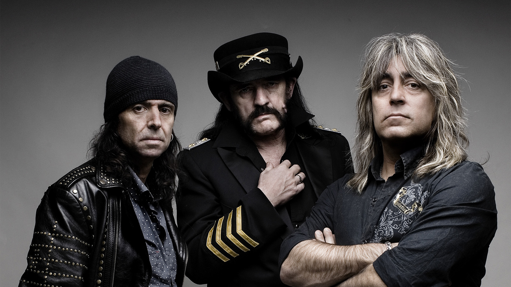
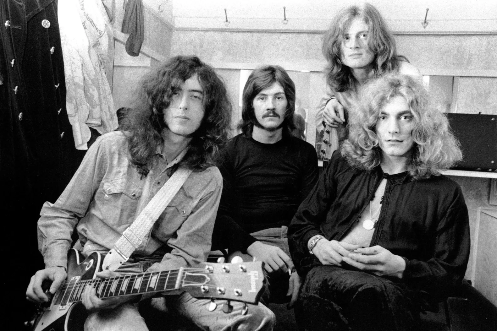
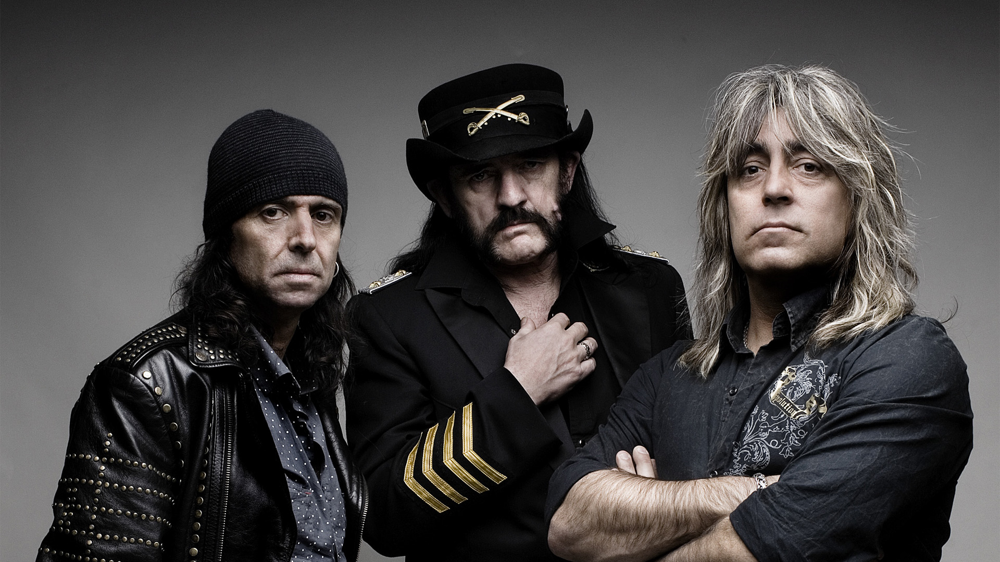
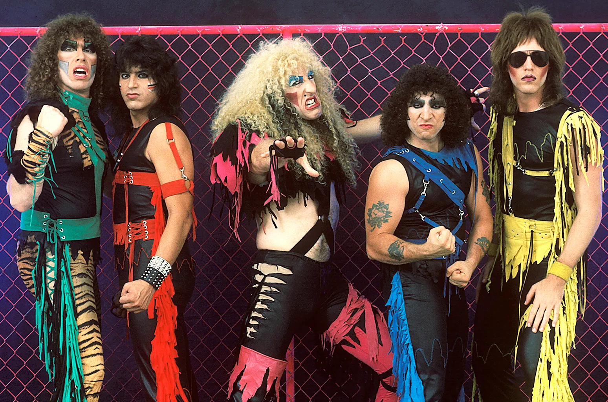
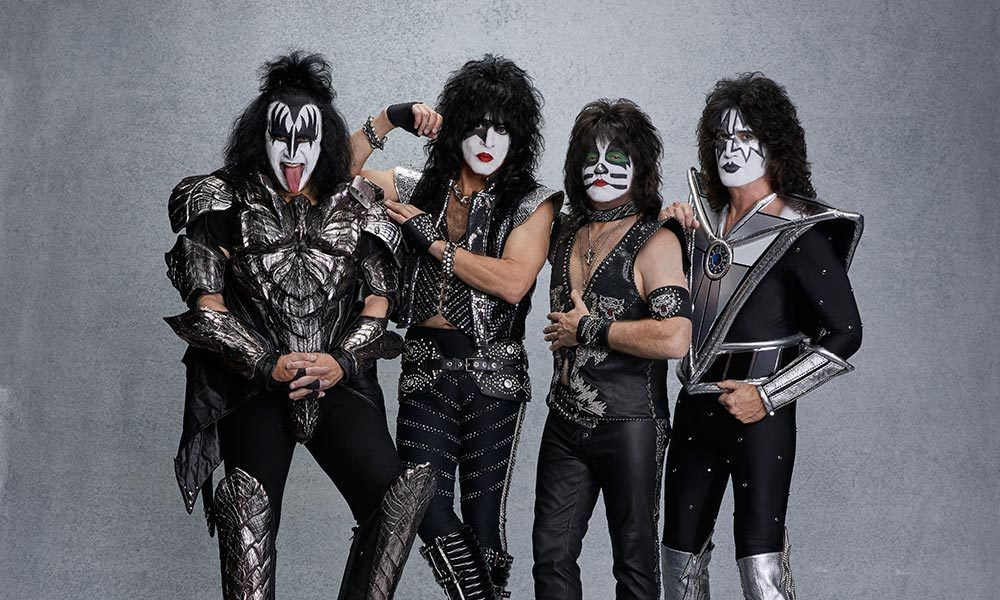

The History Of Heavy Metal
The Early 70's
The early 70s saw the first major breakthroughs of metal music in the mainstream thanks to bands like AC/DC, one of the bands who led the NBWOHM. (New British Wave Of Heavy Metal). The NBWOHM saw metal being adapted into a more dark and heavy sound with bands like Iron Maiden and Motorhead, and it seems as though things could only get heavier…
 



ACDC
Led Zeppelin
Motorhead
The Late 70's
The late 70s saw the bands from the 60s and early 70s continue to make heavy music in Britain, while in America, a new subgenre was brewing, Glam Metal. Glam Metal saw the birth of more mainstream, pop influenced bands like Quiet Riot and KISS. This genre is classified by its over the top costumes, makeup, and other “Glammy” accessories. It is viewed by enjoyers of heavier music a little corny and just for show, like when Manowar called Twisted Sister “Sissy boys in makeup”. But there is no doubt that great music did still emerge from this time period.



Twisted Sister
KISS
Quiet Riot
NEXT DECADE